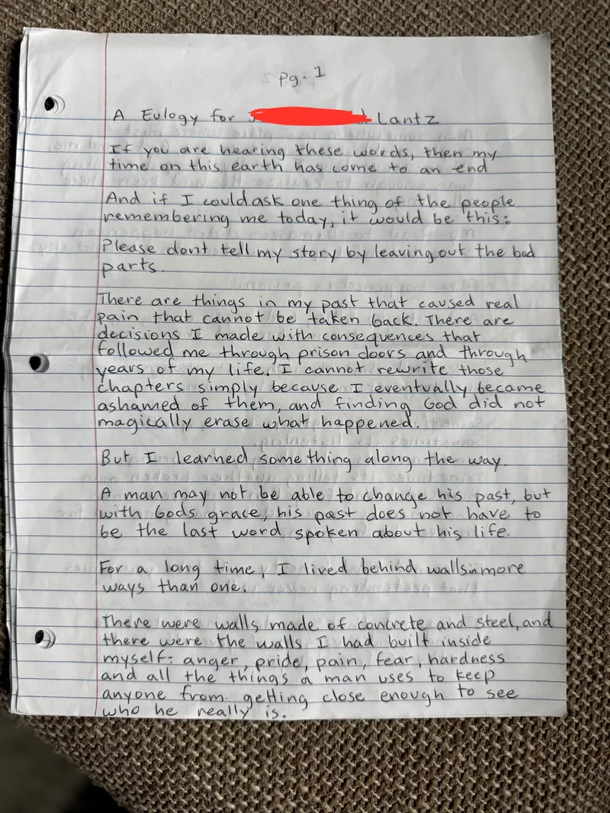
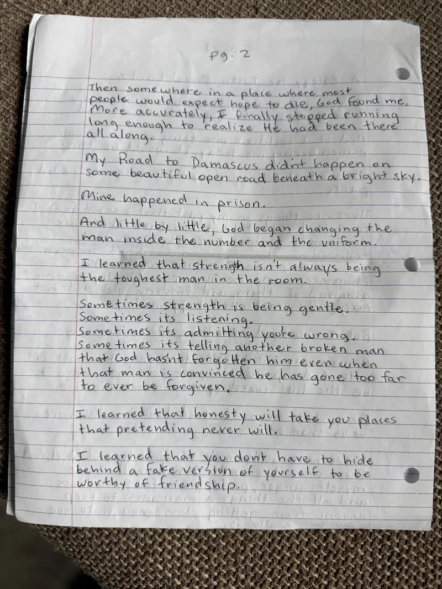
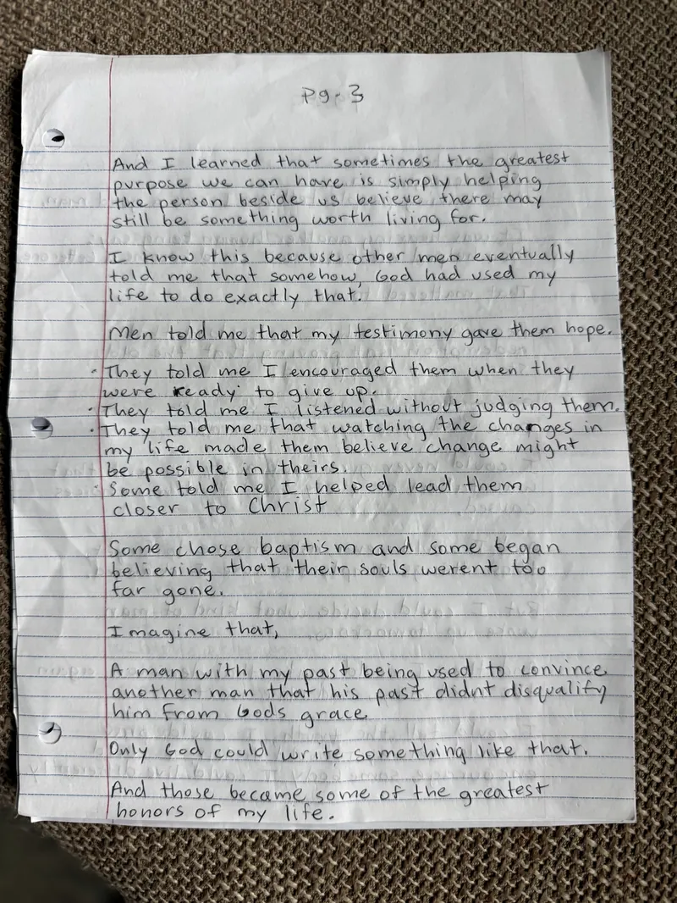
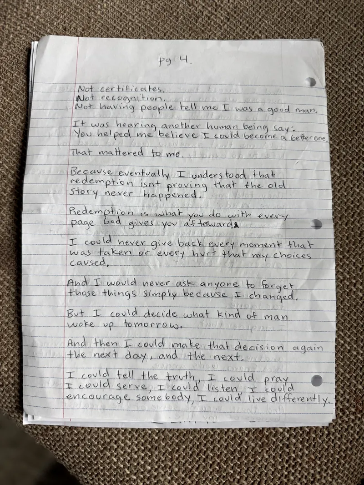
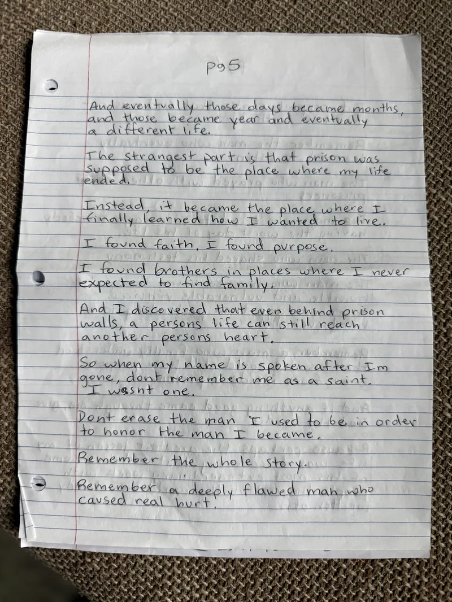
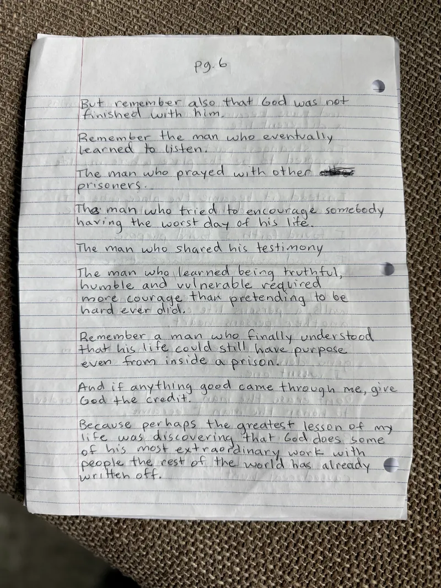
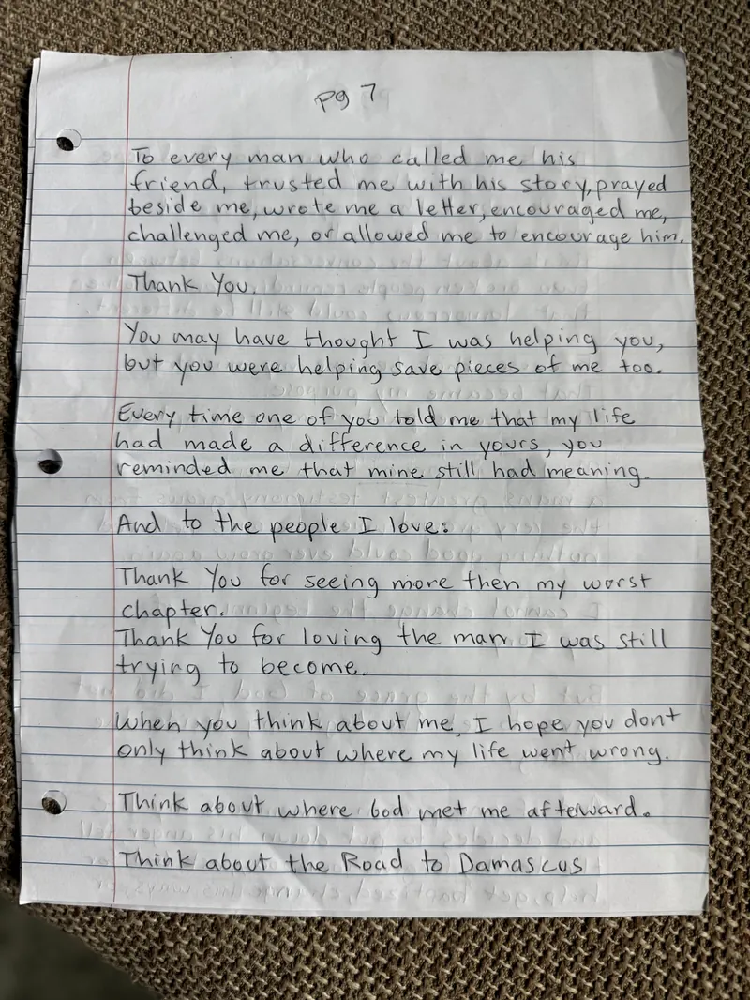
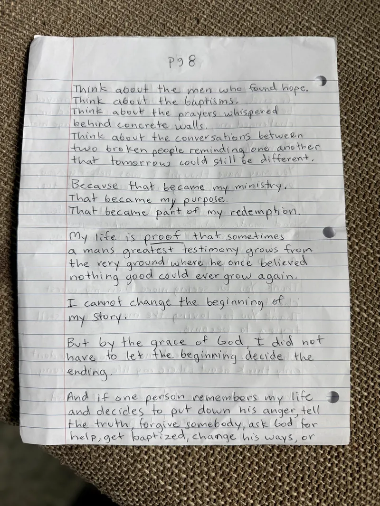
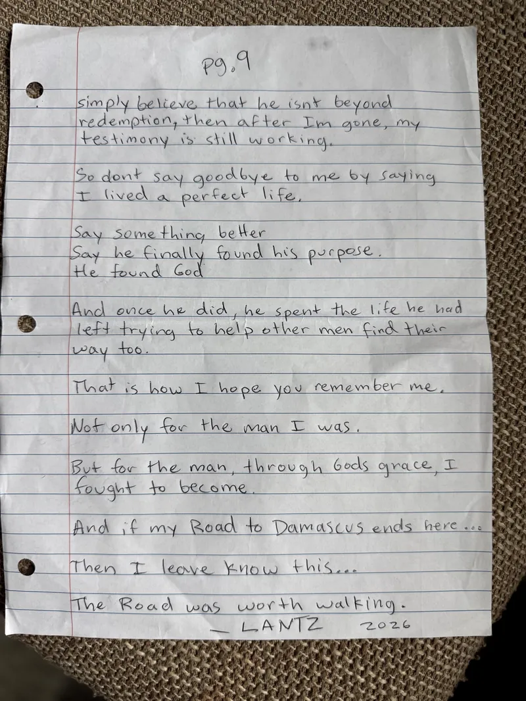

RTD Program — Testimony
A Eulogy From Behind the Walls
Written by his own hand, in his own words. Nine pages. One life, rewritten by Jesus.
Before you read
His story, shared at his request.
In the Road to Damascus Program, one of the assignments we give our students is to write their own eulogy — the words they would want spoken over their life. This is one of them.
The man who wrote it is serving two life sentences. When we first met him at the beginning of this year, he was a man filled with violence — still crippled by pain, anger, and a deep desire to hurt. What you're about to read is what God has done since.
To protect him, we've withheld his first name. But he didn't just give us permission to share this — he asked us to share it with as many people as possible. He believes that every time his story is told, he gets to leave prison in the spirit.
Our program didn't do this. Our teaching didn't do this. Our wisdom didn't do this. This transformation only happened because of the sacrifice of the man on the middle cross, Jesus Christ.
The original pages
Swipe to read, page by page.
Tap any page to view it full screen. Prefer typed text? Jump to the transcription.









1 / 9
Transcription
In his words.
Typed exactly as written, with light punctuation for readability. His first name has been withheld.
Page 1
A Eulogy for [first name withheld] Lantz
If you are hearing these words, then my time on this earth has come to an end.
And if I could ask one thing of the people remembering me today, it would be this:
Please don't tell my story by leaving out the bad parts.
There are things in my past that caused real pain that cannot be taken back. There are decisions I made with consequences that followed me through prison doors and through years of my life. I cannot rewrite those chapters simply because I eventually became ashamed of them, and finding God did not magically erase what happened.
But I learned something along the way.
A man may not be able to change his past, but with God's grace, his past does not have to be the last word spoken about his life.
For a long time, I lived behind walls in more ways than one.
There were walls made of concrete and steel, and there were the walls I had built inside myself: anger, pride, pain, fear, hardness, and all the things a man uses to keep anyone from getting close enough to see who he really is.
Page 2
Then somewhere in a place where most people would expect hope to die, God found me. More accurately, I finally stopped running long enough to realize He had been there all along.
My Road to Damascus didn't happen on some beautiful open road beneath a bright sky.
Mine happened in prison.
And little by little, God began changing the man inside the number and the uniform.
I learned that strength isn't always being the toughest man in the room.
Sometimes strength is being gentle.
Sometimes it's listening.
Sometimes it's admitting you're wrong.
Sometimes it's telling another broken man that God hasn't forgotten him even when that man is convinced he has gone too far to ever be forgiven.
I learned that honesty will take you places that pretending never will.
I learned that you don't have to hide behind a fake version of yourself to be worthy of friendship.
Page 3
And I learned that sometimes the greatest purpose we can have is simply helping the person beside us believe there may still be something worth living for.
I know this because other men eventually told me that somehow, God had used my life to do exactly that.
Men told me that my testimony gave them hope.
- They told me I encouraged them when they were ready to give up.
- They told me I listened without judging them.
- They told me that watching the changes in my life made them believe change might be possible in theirs.
- Some told me I helped lead them closer to Christ.
Some chose baptism and some began believing that their souls weren't too far gone.
Imagine that,
A man with my past being used to convince another man that his past didn't disqualify him from God's grace.
Only God could write something like that.
And those became some of the greatest honors of my life.
Page 4
Not certificates.
Not recognition.
Not having people tell me I was a good man.
It was hearing another human being say: “You helped me believe I could become a better one.”
That mattered to me.
Because eventually I understood that redemption isn't proving that the old story never happened.
Redemption is what you do with every page God gives you afterward.
I could never give back every moment that was taken or every hurt that my choices caused.
And I would never ask anyone to forget those things simply because I changed.
But I could decide what kind of man woke up tomorrow.
And then I could make that decision again the next day, and the next.
I could tell the truth, I could pray, I could serve, I could listen, I could encourage somebody, I could live differently.
Page 5
And eventually those days became months, and those became years, and eventually a different life.
The strangest part is that prison was supposed to be the place where my life ended.
Instead, it became the place where I finally learned how I wanted to live.
I found faith, I found purpose.
I found brothers in places where I never expected to find family.
And I discovered that even behind prison walls, a person's life can still reach another person's heart.
So when my name is spoken after I'm gone, don't remember me as a saint. I wasn't one.
Don't erase the man I used to be in order to honor the man I became.
Remember the whole story.
Remember a deeply flawed man who caused real hurt.
Page 6
But remember also that God was not finished with him.
Remember the man who eventually learned to listen.
The man who prayed with other prisoners.
The man who tried to encourage somebody having the worst day of his life.
The man who shared his testimony.
The man who learned being truthful, humble and vulnerable required more courage than pretending to be hard ever did.
Remember a man who finally understood that his life could still have purpose even from inside a prison.
And if anything good came through me, give God the credit.
Because perhaps the greatest lesson of my life was discovering that God does some of His most extraordinary work with people the rest of the world has already written off.
Page 7
To every man who called me his friend, trusted me with his story, prayed beside me, wrote me a letter, encouraged me, challenged me, or allowed me to encourage him.
Thank you.
You may have thought I was helping you, but you were helping save pieces of me too.
Every time one of you told me that my life had made a difference in yours, you reminded me that mine still had meaning.
And to the people I love:
Thank you for seeing more than my worst chapter.
Thank you for loving the man I was still trying to become.
When you think about me, I hope you don't only think about where my life went wrong.
Think about where God met me afterward.
Think about the Road to Damascus.
Page 8
Think about the men who found hope.
Think about the baptisms.
Think about the prayers whispered behind concrete walls.
Think about the conversations between two broken people reminding one another that tomorrow could still be different.
Because that became my ministry.
That became my purpose.
That became part of my redemption.
My life is proof that sometimes a man's greatest testimony grows from the very ground where he once believed nothing good could ever grow again.
I cannot change the beginning of my story.
But by the grace of God, I did not have to let the beginning decide the ending.
And if one person remembers my life and decides to put down his anger, tell the truth, forgive somebody, ask God for help, get baptized, change his ways, or
Page 9
simply believe that he isn't beyond redemption, then after I'm gone, my testimony is still working.
So don't say goodbye to me by saying I lived a perfect life.
Say something better.
Say he finally found his purpose.
He found God.
And once he did, he spent the life he had left trying to help other men find their way too.
That is how I hope you remember me.
Not only for the man I was.
But for the man, through God's grace, I fought to become.
And if my Road to Damascus ends here…
Then I leave, know this…
The Road was worth walking.
— Lantz, 2026
At his request
Share his story.
He asked for this to be shared with as many people as possible. Every time it's shared, he gets to walk out of prison in the spirit one more time.